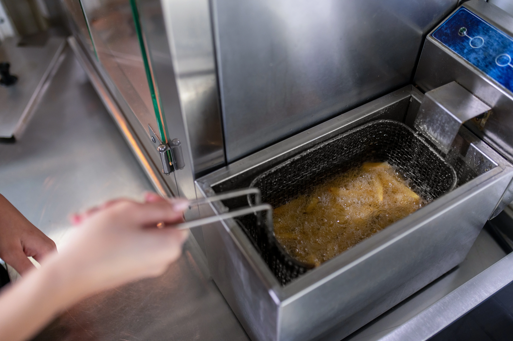
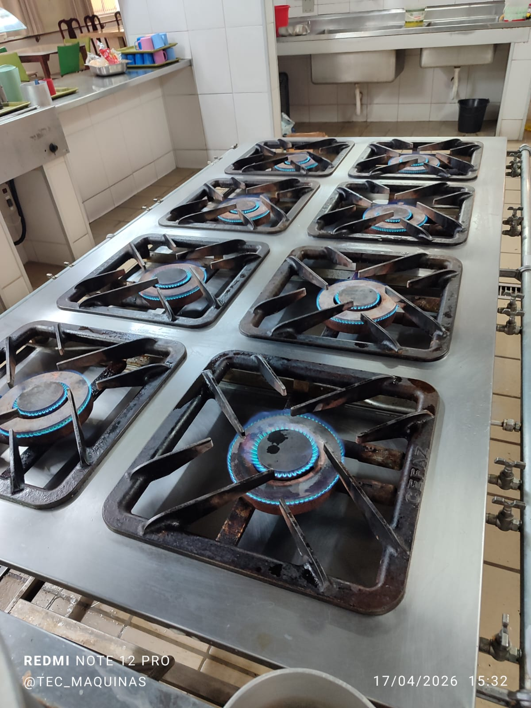
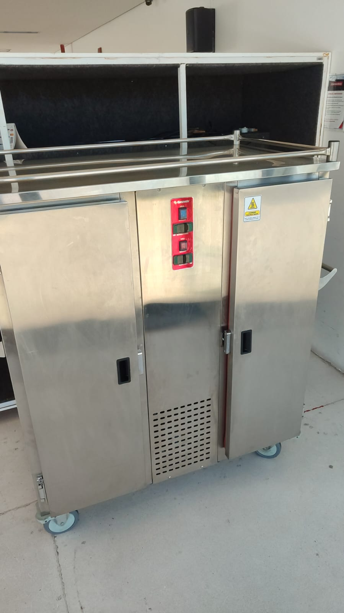
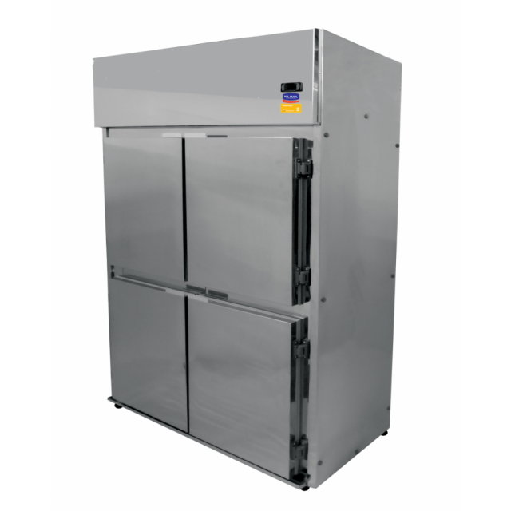
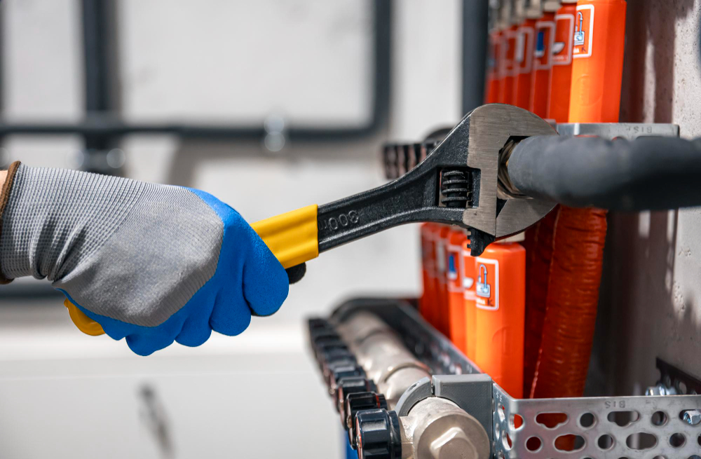
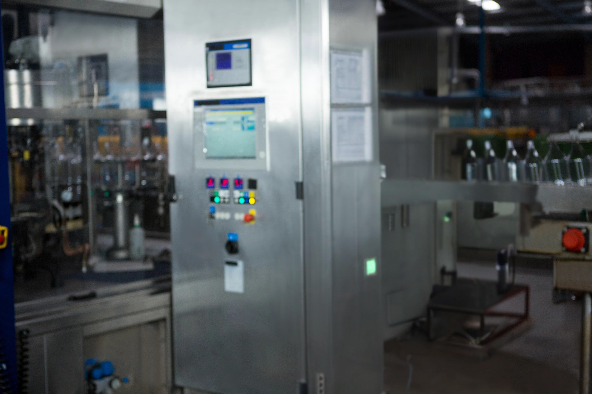

Assistência Técnica para Equipamentos de Cozinhas Industriais em Belo Horizonte
Tec-Máquinas BHEspecialistas em Equipamentos Industriais
Prestamos assistência técnica especializada em diversos equipamentos utilizados em cozinhas industriais e comerciais.

Realizamos manutenção preventiva e corretiva em fritadeiras industriais, assegurando aquecimento uniforme, segurança e alto desempenho no preparo dos alimentos.

Executamos serviços de regulagem, limpeza técnica, substituição de componentes e manutenção completa para preservar o desempenho e a segurança do equipamento.

Oferecemos manutenção e assistência técnica em carrinhos térmicos, garantindo o desempenho do equipamento, a conservação adequada dos alimentos e maior durabilidade.

Manutenção especializada em sistemas de refrigeração, incluindo diagnóstico de falhas, reparos e troca de componentes quando necessário.

Oferecemos assistência técnica especializada em Processadores de Alimentos, realizando manutenção, reparos e regulagens para garantir alto desempenho, precisão no processamento e maior vida útil do equipamento.

Efetuamos a instalação e configuração de equipamentos para cozinhas industriais, com testes operacionais para assegurar um funcionamento seguro e eficiente.
A Tec-Máquinas nasceu da experiência adquirida ao longo de uma trajetória iniciada aos 18 anos, quando seu fundador começou a atuar na manutenção de equipamentos para cozinhas industriais ao lado de seu pai. Com dedicação e busca constante por aperfeiçoamento, especializou-se por meio de formações em Auto Elétrica, Eletrotécnica, Mecânica Industrial e Eletrônica Industrial, consolidando uma atuação técnica sólida e confiável.
Hoje, com mais de 30 anos de experiência no mercado, a Tec-Máquinas é referência em assistência técnica, manutenção preventiva e corretiva, instalação de equipamentos e fornecimento de peças para cozinhas industriais. Atendemos restaurantes, bares, hotéis, hospitais, escolas, indústrias e diversos outros segmentos, sempre oferecendo soluções eficientes, seguras e personalizadas.
Cada serviço é realizado com compromisso, responsabilidade e atenção aos detalhes, garantindo mais desempenho, segurança e durabilidade aos equipamentos. Nosso objetivo é manter a operação dos nossos clientes funcionando com máxima eficiência, construindo relações baseadas na confiança, qualidade e excelência em cada atendimento.

Fornecer soluções de excelência em equipamentos de cozinhas industriais.
Atendimento especializado e personalizado para cada cliente.
Qualidade superior em todos os serviços prestados.
Soluções completas para equipamentos de cozinhas industriais.
A Tec-Máquinas é especialista em instalação, manutenção e assistência técnica para equipamentos de cozinhas industriais. Trabalhamos com agilidade, qualidade e mais de 30 anos de experiência para manter sua operação funcionando com segurança, eficiência e confiança.
Confira alguns dos serviços executados pela Tec-Máquinas em equipamentos para cozinhas industriais.